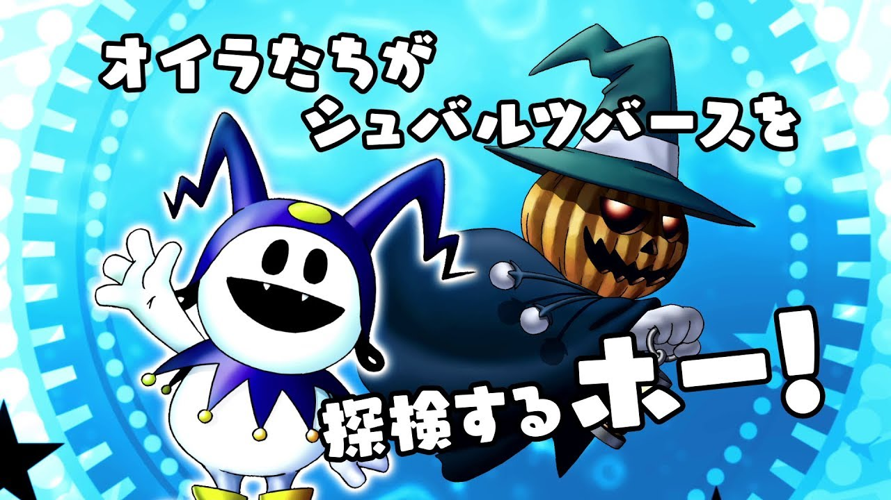
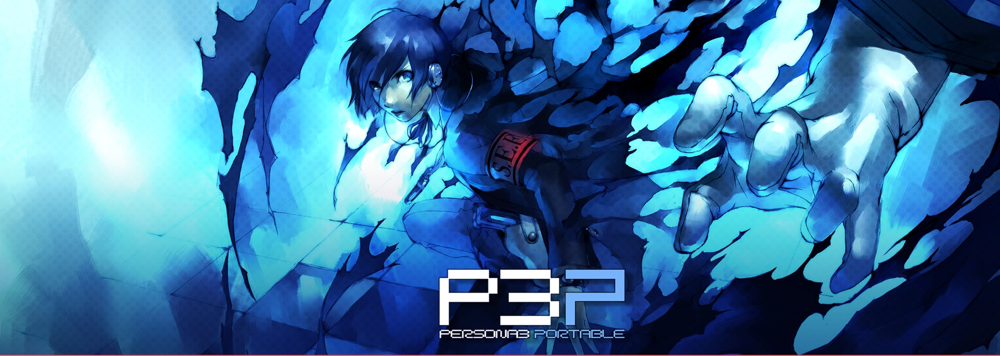
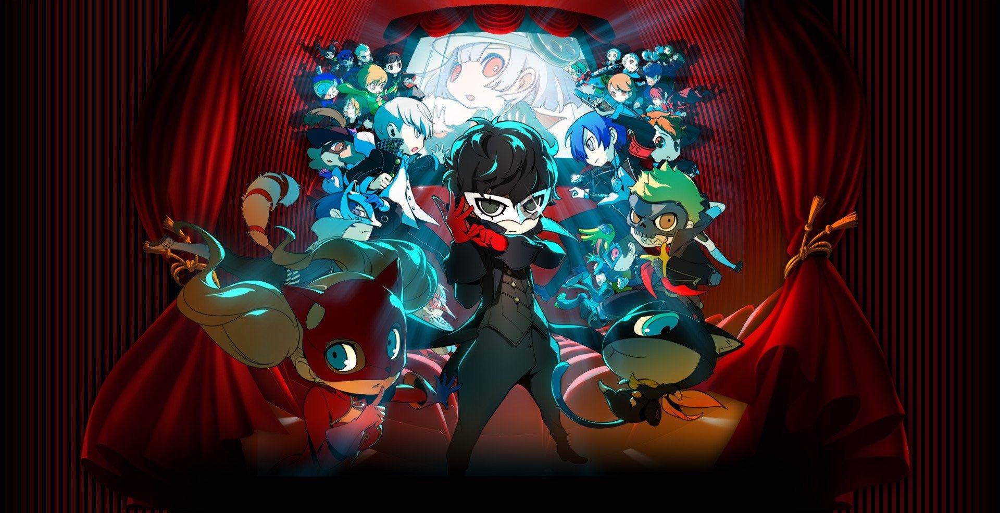

Proyectos completados
Shin Megami Tensei: Synchronicity Prologue
Un juego estilo metroidvania protagonizado por Pyro Jack y Jack Frost.
Proyectos activos
Persona 3 Portable
Un adolescente que quedó huérfano a temprana edad regresa a la ciudad de su infancia, Iwatodai. Poco después de ser transferido a la escuela preparatoria Gekkoukan, es atacado por sombras, criaturas que se alimentan de la mente de sus víctimas. Este ataque despierta su Persona interior, Orpheus, su única oportunidad para vencer a estas criaturas de la noche. Pronto descubre que otros estudiantes de la escuela también tienen ese poder. De ellos aprende todo sobre la Hora Oscura, una hora oculta que separa un día del siguiente; y que sume al mundo en las sombras. Todo se paraliza, dejando campar a sus anchas a todas las sombras. El protagonista se une al grupo "Unidad Extraescolar Especializada en Ejecuciones", SEES, y con sus compañeros, lucha contra la amenaza de las sombras, y a la vez que exploran el Tartarus, una extraña y gigantesca torre repleta de peligros en la que se transforma la escuela durante la Hora Oscura.
Proyectos a futuro
Persona Q2
Para esta aventura en primera persona y un montón de mazmorras Atlus ha querido mezclar a personajes de Persona 3, Persona 4 y Persona 5 en un solo juego. La historia comienza con Joker, Morgana y los demás Panthom Thieves en otra de sus incursiones a los Mementos que ya vimos en Persona 5. En un momento concreto el autobús tan característico que los transporta por esos oscuros túneles pierde el control haciendo entrar a los protagonistas del juego a diferentes películas donde lidiarán con varios problemas así como verse obligados a revertir la situación en la que se encuentran.
Parches
Aquí encontrarás los parches actualizados de los juegos que traduzco.
Clickea la imagen para ir al link.